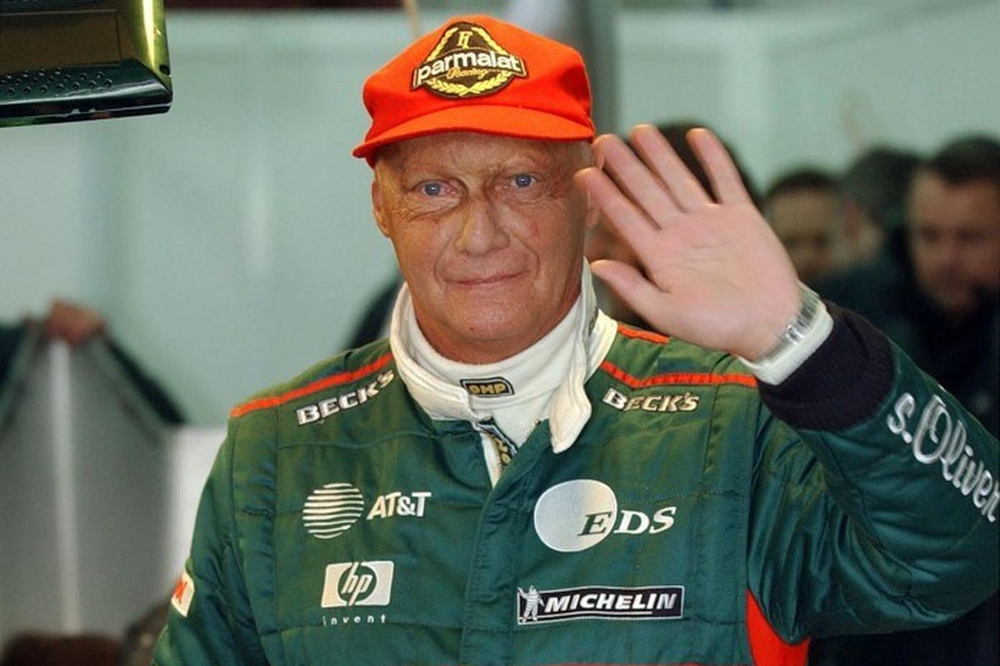
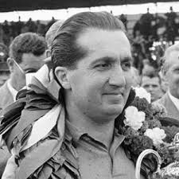

Pembalap Legendaris Ferrari

Michael Schumacher
Periode: 1996-2006
Pembalap tersukses dalam sejarah Ferrari, memenangkan 5 kejuaraan dunia berturut-turut dari 2000-2004.
- 5x Juara Dunia dengan Ferrari
- 72 kemenangan Grand Prix
- 116 podium finish
- Membawa Ferrari ke puncak kejayaan

Niki Lauda
Periode: 1974-1977
Legenda yang kembali balap hanya 6 minggu setelah kecelakaan mengerikan di Nürburgring 1976.
- 2x Juara Dunia dengan Ferrari
- 15 kemenangan Grand Prix
- Comeback legendaris setelah kecelakaan
- Icon ketangguhan dan determinasi

Alberto Ascari
Periode: 1950-1955
Pembalap pertama yang menjadi juara dunia dengan Ferrari dan pembalap Italia pertama yang menjadi juara dunia.
- 2x Juara Dunia berturut-turut
- 13 kemenangan Grand Prix
- Pembalap Ferrari pertama yang juara
- Legenda era awal Formula 1